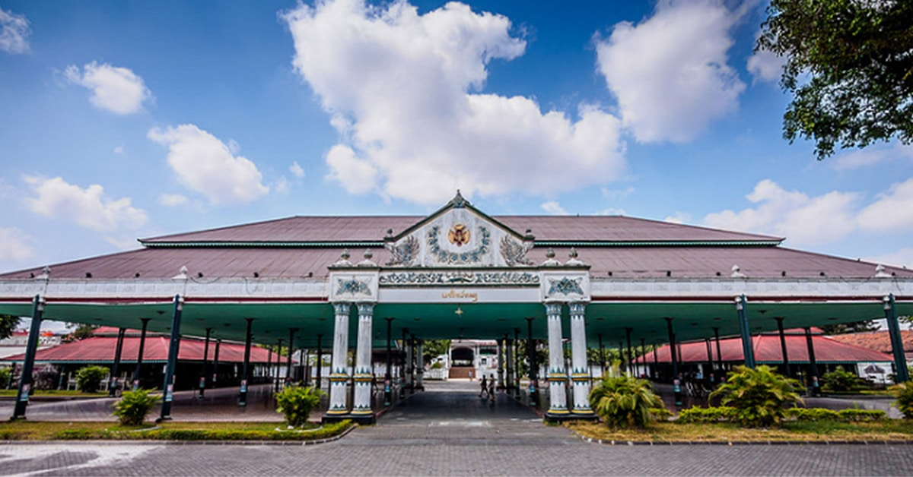
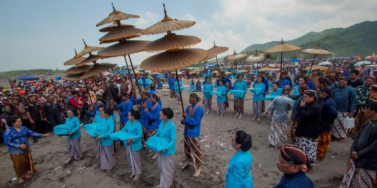
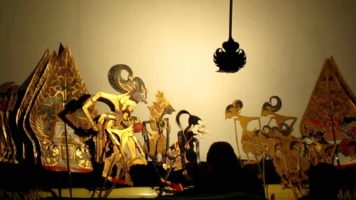
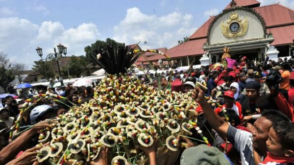
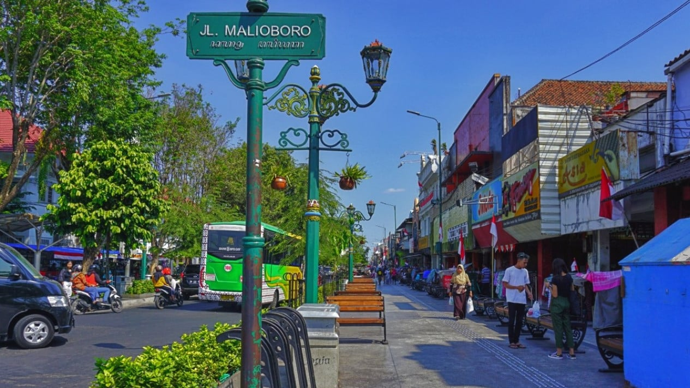
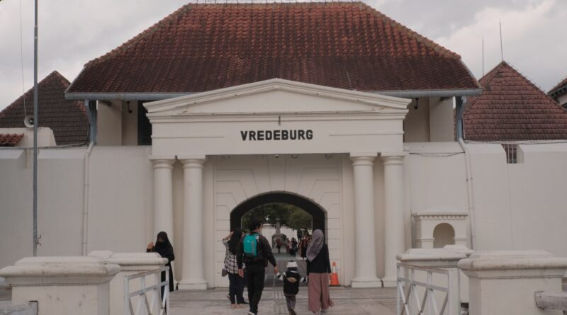
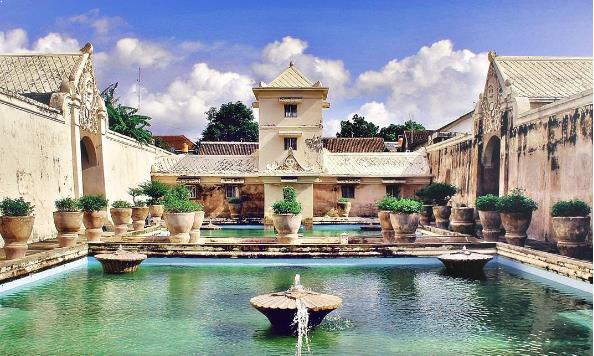

Story

Kota Yogyakarta memiliki sejarah yang panjang sejak berdirinya Kesultanan Mataram di Pulau Jawa.
Awalnya Yogyakarta merupakan bagian dari Kesultanan Mataram yang berpusat di wilayah Kotagede
Yogyakarta. Belakangan Kesultanan Mataram berpindah ke beberapa daerah seperti Kerta, Pleret,
Kartasura dan Surakarta. Pada tanggal 13 Februari 1755, Perjanjian Giyanti ditandatangani oleh
perusahaan Belanda. Perjanjian ini menandai dimulainya berdirinya kota Yogyakarta. Setelah
kemerdekaan Indonesia, Kota Yogyakarta dipilih menjadi ibu kota Negara Kesatuan Republik Indonesia
pada tahun 1946. Saat ini Kota Yogyakarta berstatus daerah istimewa berkat berdirinya Sri Sultan
Hamengkubuwono ke-X.
Menurut Babad Gianti, nama Yogyakarta mempunyai banyak asal usul. Yogyakarta adalah sebuah nama
dicetuskan oleh Pakubuwono II (raja Mataram tahun 1719 - 1727) untuk menggantikan nama pesanggrahan
Gartiwati. Sedangkan menurut Dinas Perpustakaan dan Kearsipan Daerah DIY (Daerah Istimewa
Yogyakarta), Yogyakarta berarti Yogya, yang secara kertas berarti Yogya sejahtera. Sumber lain
menyatakan bahwa nama Yogyakarta diambil dari nama Sansekerta (ibu) kota Ayodhya dalam epos
Ramayana.
Culture
Kota Yogyakarta memiliki keanekaragaman budaya yang beraneka ragam dan menjadi ciri khas ini. Budaya
Kota Yogyakarta ini sangat kaya dan mencerminkan warisan sejarah, seni, dan tradisi yang kuat.
Disini ada beberapa budaya yang terkenal di Kota Yogyakarta yaitu:
Batik Jogja
Batik Jogja memiliki makna filosofis pada setiap motifnya. Desain batik Jogja terbagi menjadi dua
yaitu desain dasar dan pelengkap. Pola dasarnya adalah ceplok, kawung, parang dan truntum.
Sedangkan
desain tambahannya berupa desain bunga, hewan, dan geometris. Batik Jogja sudah menjadi
telah lama menjadi bagian dari budaya masyarakat Yogyakarta. Padahal, sebelum UNESCO mengakui
keberadaannya Batik Indonesia pada tanggal 2 Oktober 2009, masyarakat Yogyakarta mengenal dan
menggunakan batik
sebagai bagian dari budaya mereka.
Upacara Labuhan

Upacara Labuhan berasal dari kata labuh yang berarti membuang sesuatu ke dalam air (sungai,
laut).
Upacara Labuhan dalam hal ini berarti memberi sesaji kepada roh halus yang berkuasa di suatu
tempat.
Upacara Labuhan dilakukan sebagai ungkapan rasa syukur terhadap Tuhan Yang Maha Esa dan alam.
Upacara
ini dilakukan di beberapa tempat di Kota Yogyakarta, seperti di Pantai Parangkusumo dan Gunung
Berapi.
Wayang Kulit

Wayang Kulit Yogyakarta adalah bentuk seni pertunjukan tradisional yang menggunakan boneka kulit
yang
diproyeksikan di layar putih dengan bantuan lampu. Dalam pertunjukan ini, banyak karakter dari
mitologi, legenda, dan cerita epik digambarkan, termasuk tokoh-tokoh terkenal seperti Semar,
Arjuna,
Bima, dan lainnya, masing-masing memiliki ciri khasnya sendiri dalam cerita. Pertunjukan Wayang
Kulit di Yogyakarta selalu didampingi oleh ansambel musik gamelan, yang terdiri dari berbagai
alat
musik seperti gong, saron, bonang, dan kendang.
Sekaten

Sekaten merupakan tradisi yang diadakan selama seminggu untuk memperingati kelahiran Nabi
Muhammad
SAW.
.Tradisi ini biasanya berlangsung pada tanggal 5 hingga tanggal 12 bulan Mulud menurut
penanggalan
Jawa.
Sekaten biasanya diadakan serentak di Alun-Alun Utara Yogyakarta dan juga di Alun-Alun Utara
Surakarta. Tradisi ini awalnya dimulai oleh Sri Sultan Hamengkubuwono I, pendiri Kerajaan
Yogyakarta, untuk menyebarkan agama Islam. Salah satu acara pokok perayaan Sekaten di Yogyakarta
adalah Grebeg Muludan yang berlangsung pada hari ke-12 Mulud (bertepatan dengan
Maulid Nabi Muhammad SAW) dimulai pukul 8 pagi. Acara tersebut meliputi pembuatan Gunungan,
model
gunung yang terbuat dari ketan, manisan, aneka makanan, kerupuk, buah-buahan dan sayur-sayuran.
Gunung ini dijaga oleh 10 unit
.
Tour
Kota Yogyakarta ini terdapat pilihan tempat wisata yang dapat dikunjungi. Anda bisa menikmati
berbagai destinasi wisata, mulai dari wisata sejarah, wisata alam, dan wisata seni. Ada beberapa
wisata di Kota Yogyakarta yaitu:
Malioboro

Malioboro adalah jalan terkenal di Yogyakarta, Indonesia dan jalan perbelanjaan utama kota.
Jalan
ini juga terkenal dengan makna sejarahnya karena berperan penting dalam berdirinya Keraton
Yogyakarta..Nama “Malioboro” berasal dari kata Sansekerta “malyabhara” yang berarti “buket
bunga”. Beberapa ahli juga berpendapat bahwa nama tersebut mungkin berasal dari seorang
penjajah
Inggris bernama Marlborough yang tinggal di Jogja pada tahun 1811 hingga 1816. Malioboro
awalnya
dirancang sebagai poros imajiner antara pantai selatan (Pantai Parangkusumo), Keraton
Yogyakarta, dan Gunung Merapi. Jalan tersebut antara lain Jalan Pangeran Mangkubumi, Jalan
Malioboro dan Jalan Jend. A. Yani, dan merupakan poros Keraton Yogyakarta. Pada tahun 1887,
Jalan Malioboro dibelah dua setelah dibangunnya Stasiun Tugu Yogyakarta. Jalan juga berperan
penting dalam perjuangan kemerdekaan Indonesia, ketika terjadi serangan umum pada tanggal 1
Maret 1949. Saat ini Malioboro merupakan jalan yang ramai dengan banyak pertokoan, pedagang
kaki
lima, dan restoran. Pemerintah setempat terus berupaya memperbaiki kawasan tersebut dan
menjadikannya tempat yang menarik untuk dikunjungi.
Benteng Vrendeburg

Benteng Vredeburg adalah bekas benteng kolonial yang terletak di Yogyakarta, Indonesia, yang
telah diubah menjadi museum tentang perjuangan kemerdekaan Indonesia. Benteng ini dibangun
pada
abad ke-18 sebagai pusat pemerintahan dan pertahanan warga Belanda di Yogyakarta. Nama
“Vredeburg” berarti “benteng perdamaian” dalam bahasa Belanda. Benteng ini mempunyai peranan
penting dalam perjuangan kemerdekaan Indonesia, karena merupakan tempat terjadinya serangan
umum
pada tanggal 1 Maret 1949, dimana TNI dan masyarakat sipil menguasai benteng tersebut pada
masa
tangan Belanda. Kompleks militer ini diubah menjadi museum pada tahun 1992 dan sekarang
dikenal
dengan nama Museum Benteng Vredeburg. Museum ini menyajikan sejarah perjuangan kemerdekaan
Indonesia melalui berbagai pameran, antara lain diorama, artefak sejarah, dan replika.
Koleksi
museum dapat dibagi menjadi beberapa kategori, antara lain bangunan, model tampilan
peristiwa
sejarah, lukisan, dan foto. Pengunjung dapat belajar tentang sejarah Yogyakarta dan
perjuangan
kemerdekaannya melalui pameran museum.
Taman Sari

Taman Sari adalah sebuah situs bersejarah yang terletak di Yogyakarta, Indonesia, dibangun
pada
masa pemerintahan Sri Sultan Hamengkubuwono I, pendiri Keraton Yogyakarta. Kompleks ini
dibangun
secara bertahap dan selesai pada pertengahan abad ke-18. Nama “Taman Sari” berarti “taman
yang
indah” dalam bahasa Jawa. Situs ini awalnya merupakan kompleks pemandian dan taman kerajaan
yang
memiliki banyak fungsi antara lain sebagai tempat peristirahatan, bengkel, tempat meditasi,
tempat pertahanan, dan tempat perlindungan. Kompleks ini terdiri dari berbagai bangunan,
antara
lain paviliun, kolam renang, masjid, kanal, danau buatan, dan lorong bawah tanah. Arsitektur
Taman Sari merupakan perpaduan gaya Jawa dan Eropa, dengan unsur Jawa yang mendominasi.
Kompleks
ini terletak di dalam kompleks Kraton Yogyakarta, sekitar 2 km sebelah selatan keraton. Saat
ini, Taman Sari menjadi tujuan wisata populer di Yogyakarta dan menarik pengunjung yang
ingin
mengetahui lebih jauh tentang sejarah Kraton Yogyakarta dan perjuangan kemerdekaan
Indonesia.
Kompleks pusat sumber air panas merupakan kawasan yang paling terpelihara di dalam kompleks
tersebut, sementara kawasan lainnya sebagian besar telah ditempati oleh pemukiman Kampung
Taman.
Selain makna sejarahnya, Taman Sari juga terkenal dengan keindahan dan arsitekturnya yang
unik.